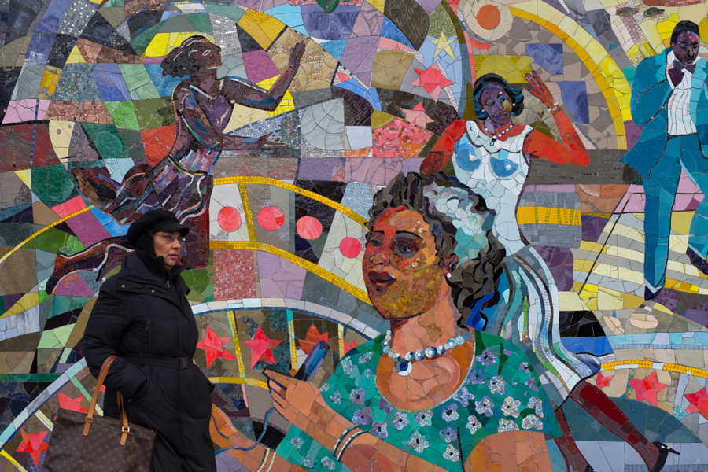
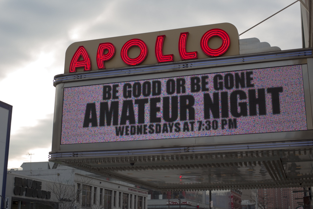

The heart of Harlem...

If Harlem is the home of soul music in New York City, then the Apollo Theater on W 125th St is its lounge room. The theater opened in 1934 and quickly became an international icon of the African-American community, hosting stars such as Sam Cooke, The Temptations and Etta James. Ella Fitzgerald was discovered at one of the Apollo's famous "Amateur Nights" in its inaugural year, when she entered to dance and decided to sing at the last minute. The Apollo was just one of several theaters in Harlem that opened as part of the Harlem Renaissance, a highly influential cultural movement in the 1920s and 30s that saw a growth of art, music and writing in African-American communities.